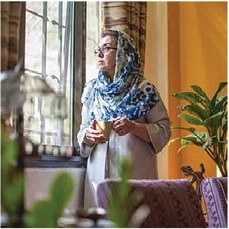
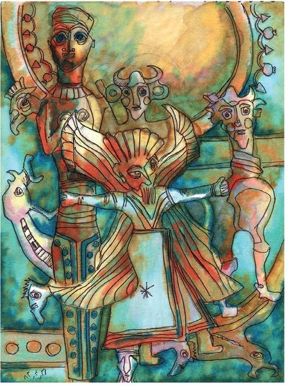
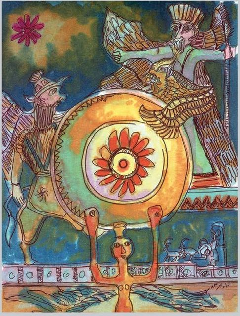
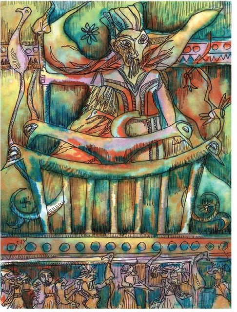
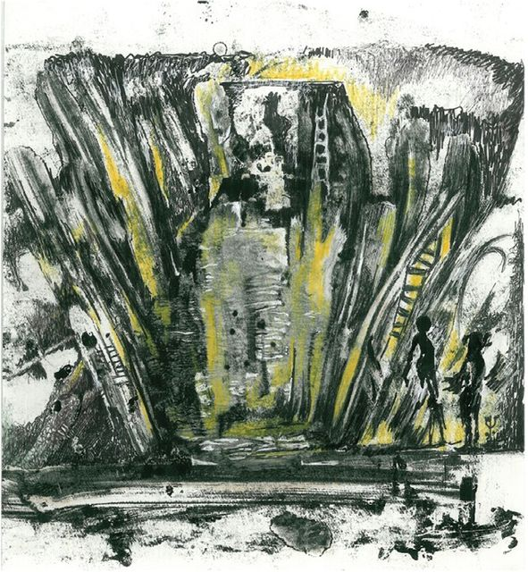
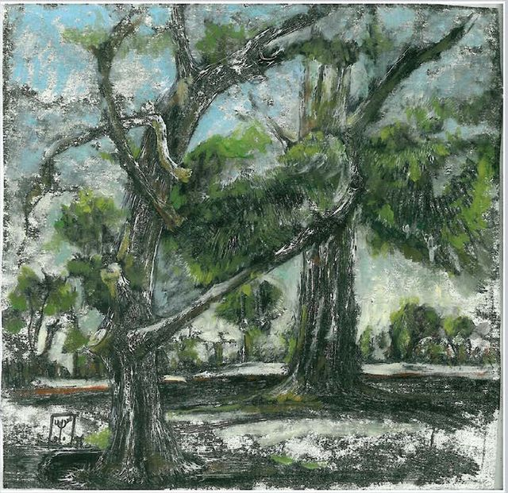
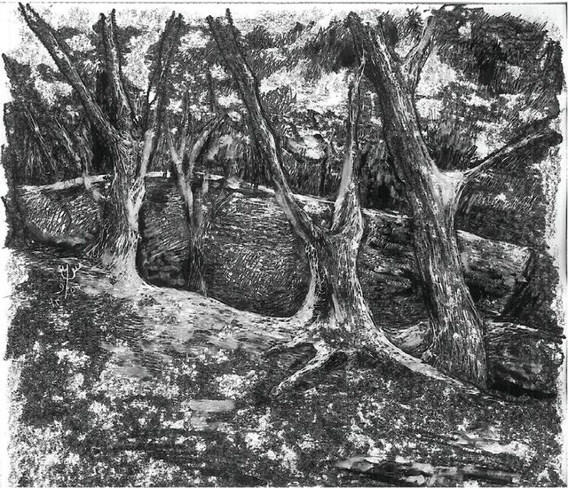
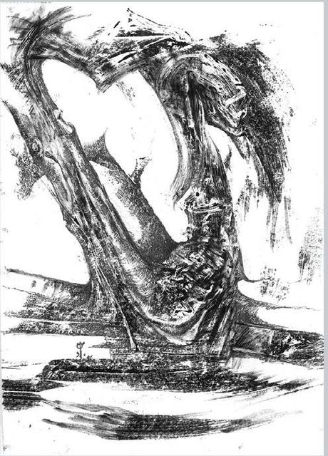
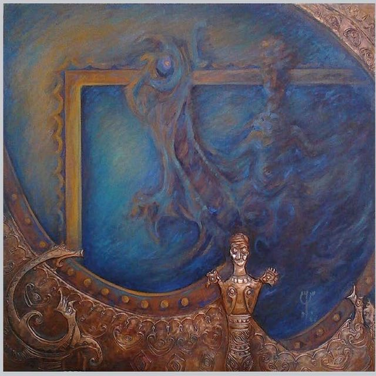
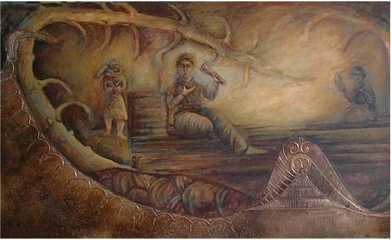

Artist
Sousan Ettehad

- Born1962
- FromAbadan, Iran
- Works9
- Dated2004–2016
StatementAbout the work
Myth
Myth series is a manifestation of love and unity that flows in the universe and this stream is shown on my canvas.
Myth series is inspired by Ziviyeh and Lorestan motifs and created in 1.5 years, compiled with fiction, following my 5 pervious created series.
It started by reproducing metalwork and Iranian myth images, but gradually through repetition, it transformed to a visual expression that beauty of mythological forms in labyrinth of colors and motifs derived from my country (Iran) developed my work and brought it into maturity.
Although primitive, it is a sign of the unity in creation and ...
The unity of God and Evil
The unity of man and woman
The unity of love and hate
Inspired by metalwork and etching elements found in Ilam and Shoosh civilizations, Myth series is looking for a personal language and has been developed gradually while being completed.
These 3 artworks have been created in the initial phase of this 80-artwork series that in labyrinth of cultural mythological language of Iranian civilizations converted to a symbolic language for expressing the feeling of unity that searched and seen by the painter.
Works9 artworks






Monoprints are a bridge between real and imaginary, a passionate imagination that follows improvisation, figuring real in imaginary and dream language. An improvisational tool to express what the hearts want, through spilled ink on the glass plate. Events that are exactly as they should be.








These works created on a copper sheet using elements of metalworking and etching in Ziviyeh, Ilam and Shoosh and with a focus toward painted plates in Sasanian Period. Unity of female and male elements has been one of the painter's main concerns during creation.




History of experienceBiography · education · exhibitions · awards
Biography
She began painting with Ms. Zoya Sadri and Mr. Mahmoud Meraji in 1982 and started her academic education; studying in Bachelor of Painting at University of Al-Zahra. She completed her study in Master of Art Research in Tehran Art University on 1999; while training for advanced painting in Mr. Gholamhossein Nami atelier. She found Ms. Maryam Mahin art classes in 2000 and continued to improve her academic knowledge at her atelier until 2012.
At 2000, she was invited and joined to teach in Islamic Azad University and Science and Culture University as visiting instructor and her research "Symbols in Iranian Paintings" was published by Iran Art Journal.
Also, her paintings have been published in various books like IRANICA, Iranian Professional Women Encyclopedia, Colors and Motifs, The Color of Kindness, and Zurvanian Ceremony in Ancient Iran.
In three decade of her artistic career, Sousan Ettehad has participated in more than 20 group and 3 solo exhibitions. About her painting subjects, she says: "My subjects mainly express a personal feeling or transfer a specific concept; either I am painting a Sama ceremony, a figure, a myth or even a doll on my canvas."
Educations
- 1995–1999Master,Arts — Research, Tehran University of Art|Tehran – Iran
- 1988–1993Bachelor, Painting, Alzahra University|Tehran – Iran
Solo exhibitions
- 2014Tree Art Gallery|Karaj – Iran
- 2010Mahjoubi Gallery - Ashiyan Naghsh-o-Mehr|Tehran – Iran
- 1994Vali Art Gallery|Tehran – Iran
Group exhibitions
- 2016Seacourt - Centre for Contemporary Printmaking|Bangor-Ireland
- 2016Sobhan Gallery|Tehran – Iran
- 2015Satura Gallery|Genova-Italy
- 2013Persbook Website|Tehran – Iran
- 2011Termeh Gallery|Tehran-Iran
- 2011Aria Gallery|Tehran – Iran
- 2009Iranian Center for International Conferences|Tehran – Iran
- 2007Silak Art Gallery|Tehran – Iran
- 2005Abkar Museum|Tehran – Iran
- 2005Sabalan Art Gallery|Tehran – Iran
- 2004Niavaran Cultural Center|Tehran – Iran
- 2004Mani Art Gallery|Tehran – Iran
- 2003Art Cultural center|Tehran – Iran
- 2003Abkar Museum, Saadabad Historical and Cultural Center|Tehran – Iran
- 2003Sheikh Hadi Art Gallery|Tehran – Iran
- 2001Niavaran Cultural Center|Tehran – Iran
- 2001Behzad Art Gallery|Tehran – Iran
- 2001Saadabad Historical and Cultural Center|Tehran – Iran
- 20007Samar Art Gallery|Tehran – Iran
- 2000Amir Kabir Cultural Center|Tehran – Iran
- 2000Niavaran Cultural Center|Tehran – Iran
- 1995Niavaran Cultural Center|Tehran – Iran
- 1993Tehran Museum of Contemporary Art|Tehran – Iran
Trainings
- 2005–2005Mosaic Painting-Advanced, Ms. Maryam Mahin|Tehran – Iran
- 2004–2005Monoprint-Advanced,Ms. Maryam Mahin|Tehran – Iran
- 2002–2003Anatomy Drawing-Advanced, Ms. Maryam Mahin|Tehran – Iran
- 2002–2012Painting-Advanced, Ms. Maryam Mahin|Tehran – Iran
- 2000–2012Drawing-Advanced, Ms. Maryam Mahin|Tehran – Iran
- 1995–1999Drawing and Painting, Mr. Gholamhossein Nami|Tehran – Iran
- 1984–1986Drawing and Painting, Mr. Mahmoud Meraji|Tehran – Iran
- 1982–1984Drawing and Painting-Basic, Ms. Zoya Sadri|Tehran – Iran
Teachings
- 2005–2009Drawing for Fashion Designers, University of Science and Culture|Tehran Iran
- 1999–2005Drawing-Advanced,Islamic Azad University|Tehran – Iran
- 1993–2013Drawing and Painting,Personal Atelier|Tehran – Iran
- 1991–1991Drawing and Painting,Fine Arts School for Girls|Tehran – Iran
Jobs
- 1991–2013Drawing and Painting Instructor, University & Personal Atelier|Tehran – Iran
Memberships
- 2004–2007Member, The Boundless Blue Art Group|Tehran – Iran
- 2004–PresentContinuous Member,Association of Iranian Painters|Tehran – Iran
- 2001–PresentHonorary Member, Institute for Promotion of Contemporary Visual Arts|Tehran – Iran
Achievements
- 2005The Boundless Blue Members Exhibition, Appreciation|Tehran – Iran
- 2001First professional painting exhibition in shemiranat, Appreciation|Tehran – Iran
- 2000First Women Visual Art Exhibition, Appreciation|Tehran – Iran
- 1995Expression of emotion Exhibition-Woman's Day Celebration, Appreciation|Tehran – Iran
Publications
- 2000Article, Symbols in Iranian Paintings, Writer, Researcher|Tehran – Iran
- 1999Thesis,Reviewing Motifs in Persian Miniature Artworks,Writer,Researcher|Tehran – Iran
- 1993Thesis, The image and visualization of Sufism in Islamic Art, Writer, Researcher|Tehran – Iran
- 1993Social Activity, Kahrizak Charity Sales|Tehran – Iran
- 1980Social Activity,First Aid Internship at Hospital|Tehran – Iran
Media
- 2016Isna News Agency Imaginary Thoughts exhibition will open|Tehran – Iran
- 2015Exib Art Time to Talk|Milan-Italy
- 2013Persbook Art,Persbook4|Tehran – Iran
- 2013Zurvanian Ceremony Book by Mr. Hashem Razi, Zurvanian Ceremony Book|Tehran – Iran
- 2010Tehran Radio,Parallel Myths|Tehran – Iran
- 2009The Color of Kindness Book, The Color of Kindness-First Visual Art Festival|Tehran – Iran
- 2009The Encyclopædia Iranica Book, Iranian Contemporary Artists|Tehran – Iran
- 2007Asia Newspaper, Painting group exhibition at Silak Gallery|Tehran – Iran
- 2004Abrar Newspaper, A Glance at Boundless Blue group members exhibition|Tehran – Iran
- 2000Colors and Motifs Book|Tehran – Iran
- 2000Iranian Professional Women Encyclopedia|Tehran – Iran
- 1994Hamshahri Newspaper, A talk with some of Painting's Graduates from AlZahra University|Tehran – Iran
- 1994Ettelaat, Opening of painting exhibition at Vali Art Gallery|Tehran – Iran
Source: the Sobhan Gallery artist catalogue “Sousan Ettehad.pdf”.